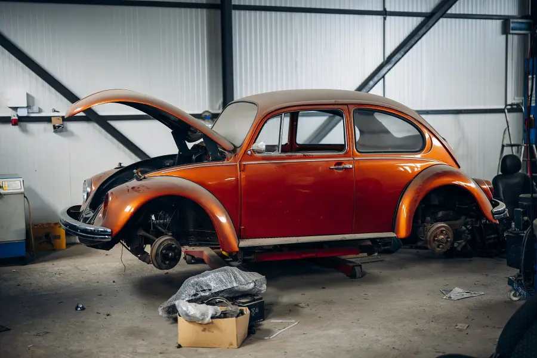

Prüfprotokoll Radhaus Elbe
Erfundene Demo-Website, echte Messung mit Nextfix.

Fünf Aufgaben erledigt: Sitemap bereinigt · 404 behoben · defekte Links repariert · 7 Seiten mit wenig Text ausgebaut · 4 Seiten mit eigenen Beschreibungen.
Gemessen am 28.10.2026, beide Fassungen lokal geprüft: So haben wir gemessen · Alle 111 Prüfungen ansehen. Was das bei Google bringt, kann niemand versprechen.
Seiten mit 4xx-Statuscode · Redirect-Ketten und -Schleifen · robots.txt nicht gefunden · Seiten für Google gesperrt · Seite baut sich per JavaScript auf – ohne JavaScript geprüft · Doppelte Title-Tags · Title zu kurz (≤ 10 Zeichen) · Meta-Description fehlt · Mehr als eine H1 · Bilder ohne alt-Attribut · Unsichere Inhalte auf sicheren Seiten (Mixed Content) · Browser erzwingen keine sichere Verbindung (HSTS) · Unkomprimierte Seiten · Viewport-Tag fehlt · Mehrere Canonical-URLs · Keine Zeichenkodierung · Passwortfeld auf HTTP-Seite · Defekte externe Links · Ungültiger Sprachcode in hreflang · Sprachcode mehrfach mit verschiedenen URLs · hreflang und lang-Attribut widersprechen sich · Fragen ohne FAQ-Markup · Artikel ohne Autor oder Datum · Layout springt beim Laden (CLS mobil über 0,25) · Interne Links mit nofollow · Links ohne Anchor-Text · Nur ein eingehender interner Link · URL länger als 200 Zeichen · Zu viele JS- und CSS-Dateien (> 100) · Skript- und Style-Dateien nicht verkleinert · HTTP leitet nicht auf HTTPS um · Falscher Zertifikatsname · llms.txt mit Formatfehlern · llms.txt ohne Kurzbeschreibung oder Links · sitemap.xml zu groß · Verwaiste Seiten (nur in der Sitemap)